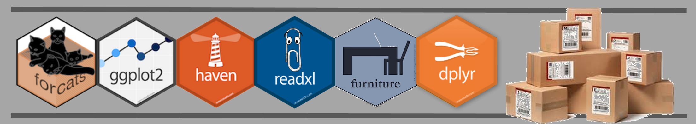
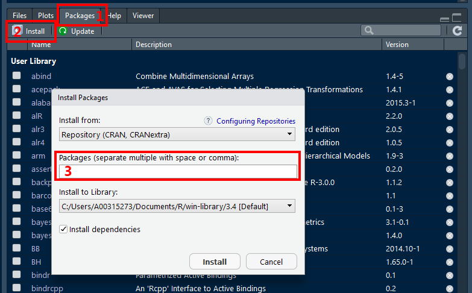

3 Install Packages

Learn what packages are and how to get them.
3.1 Package FAQ
3.1.1 What are packages ?
\(R\) packages are collections of functions and data sets (just files) developed by the community (or you). They increase the power of \(R\) by improving existing base \(R\) functionalities, or by adding new ones.
When you download \(R\) you are only getting the bare-bones, most basic files. This is nice, as it keeps the program from hogging your entire hard drive, but doesn’t offer much in terms of data anaysis. Today there are over 10,000 packages available on \(CRAN\) alone, so downloading all of them would be silly and probably fill your computer several times over. Individual users are left with the freedom to choose which packages they need.
More information may be found here: https://www.datacamp.com/community/tutorials/r-packages-guide
3.1.2 Where can you get packages ?
A repository is a place where packages are located so you can install them from it. Typically they are online and accesible to everyone. Three of the most popular repositories for \(R\) packages are:
| Repository | |
|---|---|
|
|
\(CRAN\): the official repository, it is a network of \(ftp\) and web servers mantained by the \(R\) community around the world. It is coordinated by the \(R\) foundation, and for a package to be published here it needs to pass several tests here. |
| \(GitHub\): although this is not \(R\) specific, \(GitHub\) is probably the most popular repository for open source projects. Its popularity comes from the unlimited space for open source, the integration with \(git\), a version control software, and its ease to share and collaborate with others. But be aware that there is no review process associated to it. (All the files for this eBook are stored on \(GitHub\).) | |
| Bioconductor: this is a topic specific repository, intended for open source software for bioinformatics. As \(CRAN\), it has its own submission and review processes, and its community is very active having several conferences and meetings per year. |
3.2 Installing packages
Installing is the act of getting the package files onto your computer and stored in a location on your hard drive where \(R\) can find them. Usually the files are zipped/compress and must be extracted/unpacked. The directions below will walk you through the automated process of using the user interface in \(R Studio\) (rather than actual syntax).
In R Studio:
- Click on the Packages tab in the panel with the most tabs
- Click on the word Install just under and to the left of the tab
- In the box labelled “Packages”, type the name of the package you would like to download. You can do several at once, just seperate them with at least one space or a comma.
You only need to INSTALL packages ONCE per
computer.
Leave the installation “library path” as the default. Also,
make sure the box for “Installing dependencies” box is
checked.

? You can copy-and-paste the following list into the box (labeled 3 above) to load the packages that we find most commonly used. You can install more packages at any time.
Useful Package List
tidyverse, furniture, pander, stargazer, texreg, xtable, kableExtra, RColorBrewer, gghighlight, ggthemes, ggfortify, ggalt, ggExtra, GGally, ggeffects, corrplot, gpairs, gridextra, likert, vcd, scales, cowplot, yarrr, psych, polycor, corpcor, sjlabelled, sjPlot, sjmisc, sjstats, Hmisc, labelled, afex, emmeans, corpcor, multicomp, multcompView, car, effects, predictmean, nlme, lme4, lmerTest, HLMdiag, geepack, gee, gee4, optimx, MuMIn, lavaan, OpenMx, sem, semPlot, randomForest, randomForestSRC, ggRandomForests, party, partykit, mgcv, glmnet, survival, caret, bookdown, blogdown, tidytex, xaringan, REDCapR, redcapAPI, devtools, testthat, roxygen2, eRm, ltm, lsr, heplots, magrittr, hexbin, leaps, mlmRev, MuMIn, ISwR, VIM, effects, usethis, tinytex
When you click the Install buttom, a smaller window may asks if you would like to “re-start \(R\) prior to installing”, choose “no” and manually close and open the \(R Studio\) program once all packages have been downloaded, unpacked, and checked (saves time). This may take a few minutes, especially if you have selected multiple packages.
3.3 Useful Packages on CRAN
A curated list of handy \(R\) packages and tools can be found at awesome-r.com
3.3.1 The Tidy-Universe, a META package from \(R Studio\)
The
tidyverseis an opinionated collection of \(R\) packages designed for data science. All packages share an underlying design philosophy, grammar, and data structures.
The core tidyverse includes the packages that you are likely to use in everyday data analyses. As of tidyverse 1.2.0, the top 8 packages in the following table are included in the core tidyverse.
The tidyverse also includes many other packages with more specialised usage. They are not loaded automatically with library(tidyverse), so you’ll need to load each one with its own call to library().
| website | description |
|---|---|
dplyr |
A Grammar of Data Manipulation |
forcats |
Tools for Working with Categorical Variables (Factors) |
ggplot2 |
Create Elegant Data Visualisations Using the Grammar of Graphics |
purrr |
Functional Programming Tools |
readr |
Read Rectangular Text Data |
stringr |
Simple, Consistent Wrappers for Common String Operations (Text) |
tibble |
Simple Data Frames |
tidyr |
Easily Tidy Data with |
broom |
Convert Statistical Analysis Objects into Tidy Tibbles |
haven |
Import and Export SPSS, Stata and SAS Files |
hms |
Pretty Time of Day |
lubridate |
Make Dealing with Dates a Little Easier |
magrittr |
A Forward-Pipe Operator for \(R\) |
glue |
Interpreted String Literals |
readxl |
Read Excel Files |
tibble |
Simple Data Frames |
3.3.2 Groups of Individual Packages on \(CRAN\)
3.3.2.1 TinyTex
TinyTeX is a custom LaTeX distribution based on TeX Live that is small in size, but functions well in most cases, especially for R users. If you run into the problem of missing LaTeX packages, it should be super clear to you what you need to do (in fact, R users won’t need to do anything). You only install LaTeX packages you actually need.
| website | description |
|---|---|
tinytex |
custom LaTeX distribution based on TeX Live |
3.3.2.2 Creating Tables
| website | description |
|---|---|
furniture |
Tables for Quantitative Scientists |
pander |
An R ‘Pandoc’ Writer (makes tables look nice) |
stargazer |
Well-Formatted Regression and Summary Statistics Tables |
texreg |
Conversion of R Regression Output to LaTeX or HTML Tables |
xtable |
Export Tables to LaTeX or HTML |
kableExtra |
Construct Complex Table with kable and Pipe Syntax |
3.3.2.3 Visualization
| website | description |
|---|---|
RColorBrewer |
Color Palettes |
gghighlight |
Highlight Lines and Points in ggplot2 |
ggthemes |
Extra Themes, Scales, and Geoms for ggplot2 |
ggExtra |
Add Marginal Histograms to ggplot2, and More ggplot2 Enhancements |
ggfortify |
Data Visualization Tools for Statistical Analysis Results |
ggalt |
Lots of extras for ggplot2 |
GGally |
Extension to ggplot2 |
corrplot |
Visualization of a Correlation Matrix |
gpairs |
The Generalized Pairs Plot |
gridextra |
Miscellaneous Functions for “Grid” Graphics |
likert |
Analysis and Visualization Likert Items |
vcd |
Visualizing Categorical Data |
scales |
Scale Functions for Visualization |
cowplot |
Streamlined Plot Theme & Annotations for ggplot2 |
yarrr |
The Pirate’s Guide to \(R\) |
3.3.2.4 Generally Handy
| website | description |
|---|---|
polycor |
Polychoric and Polyserial Correlations |
psych |
Psychological or Psychometric Procedures |
corpcor |
Covariance and (Partial) Correlation |
sjlabelled |
Labelled Data Utility Functions |
sjPlot |
Data Visualization for Statistics in Social Science |
sjmisc |
Data and Variable Transformation Functions |
sjstats |
Convenient Functions for Common Statistical Computations |
Hmisc |
Harrell Miscellaneous |
labelled |
Manipulating Labelled Data |
3.3.2.5 t-Tests, ANOVA, and RM ANOVA
| website | description |
|---|---|
afex |
Analysis of Factorial Experiments |
emmeans |
Estimated Marginal Means, aka Least-Squares Means |
multicomp |
Simultaneous Inference in General Parametric Models |
multcompView |
Visualizations of Paired Comparisons |
VIM |
Visualization and Imputation of Missing Values |
3.3.2.6 Regression (ML, GLM)
| website | description |
|---|---|
car |
Companion to Applied Regression |
effects |
Effect Displays for Linear, Generalized Linear, and Other Models |
predictmeans |
Calculate Predicted Means for Linear Models |
effects |
Effect Displays for Linear, Generalized Linear, and Other Models |
3.3.2.7 Multilevel Models (MLM, HLM, GEE)
| website | description |
|---|---|
nlme |
Linear and Nonlinear Mixed Effects Models |
lme4 |
Linear Mixed-Effects Models |
lmerTest |
Tests in Linear Mixed Effects Models |
HLMdiag |
Diagnostic Tools for Hierarchical (Multilevel) Linear Models |
geepack |
Generalized Estimating Equation Package |
gee |
Generalized Estimation Equation Solver |
gee4 |
Generalised Estimating Equations (GEE/WGEE) |
optimx |
A Replacement and Extension of the optim() Function |
MuMIn |
Multi-Model Inference |
3.3.2.8 Structural Equation Modeling (SEM)
| website | description |
|---|---|
lavaan |
Latent Variable Analysis |
OpenMx |
Extended Structural Equation Modelling |
sem |
Structural Equation Modelling |
semPlot |
Path Diagrams and Visual Analysis of Various SEM Packages’ Output |
3.3.2.9 Random Forests
| website | description |
|---|---|
randomForest |
Random Forests for Classification and Regression |
randomForestSRC |
for Survival, Regression, and Classification |
ggRandomForests |
Visually Exploring Random Forests |
party |
A Laboratory for Recursive Partytioning |
partykit |
A Toolkit for Recursive Partytioning |
3.3.2.10 Other Models
| website | description |
|---|---|
mgcv |
Mixed GAM Computation Vehicle with Automatic Smoothness Estimation |
glmnet |
Lasso and Elastic-Net Regularized Generalized Linear Models |
survival |
Survival Analysis |
caret |
Classification and Regression Training |
3.3.2.11 Reproducibility and Reporting
| website | description |
|---|---|
bookdown |
Authoring Books and Technical Documents |
blogdown |
Create Blogs and Websites |
xaringan |
Presentation Ninja |
Note: slidify & ReportRs have been removed from \(CRAN\)
3.4 Userful Packages on \(GitHub\)
First, make sure you have the devtools package installed on your computer (hint: it is included in the list above).
install.packages("devtools")3.4.1 Templates for writing tutorials, practicals or examination papers with \(R Markdown\)
unilur is a \(R\) package to help writing tutorials, practicals or examination papers with \(R Markdown\).
With unilur you can render the following outputs from a single rmarkdown file:
the exam or tutorial questions (answers remaining hidden) as a PDF or HTML file.
the exam or tutorial questions with sample answers as a PDF or HTML file.
In addition, you will be able to:
Create coloured boxes to highlight some markdown or R content.
Create examination papers with
- multiple choice questions
- a candidate identification form
- dotted lines placeholders to fill in answers
Create a new \(R Markdown\) file with solution chunks replaced by empty ones.
Website: GitHub -
unilur
Tutorial: blog
post - unilur
devtools::install_github("koncina/unilur")3.4.2 Prepare APA journal articles with \(R Markdown\)
papaja is a \(R\) package in the making including a \(R Markdown\) template that can be used with (or without) \(R\) Studio to produce documents, which conform to the American Psychological Association (APA) manuscript guidelines (6th Edition). The package uses the \(LaTeX\) document class apa6 and a .docx-reference file, so you can create PDF documents, or Word documents if you have to. Moreover, papaja supplies \(R\) functions that facilitate reporting results of your analyses in accordance with APA guidelines.
papaja has not yet been submitted to \(CRAN\) because it is under active development. Currently, there are still a couple of loose ends they would like to tie up before we release the package to a larger audience. There are two versions you can install from the \(GitHub\) website.
Website: GitHub -
papaja
Tutorial: eBook -
papaja
# Install the stable development verions from GitHub
devtools::install_github("crsh/papaja")
# Install the latest development snapshot from GitHub
devtools::install_github("crsh/papaja@devel")